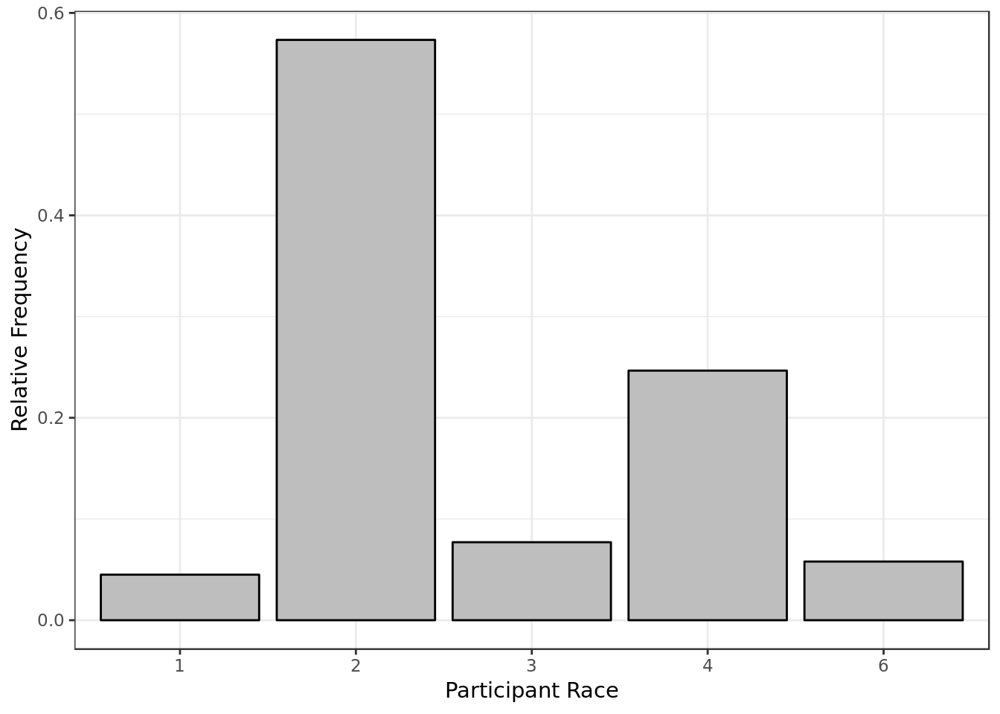
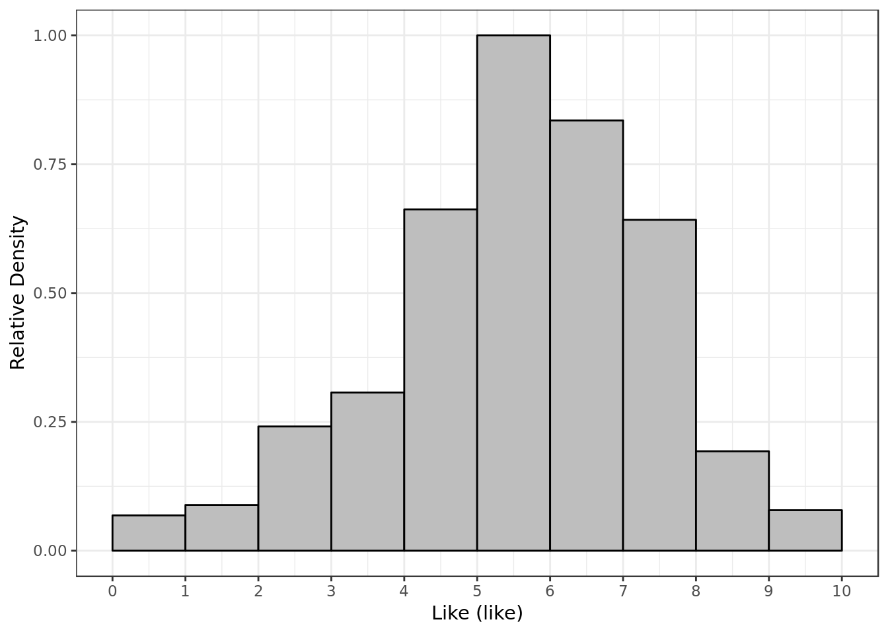
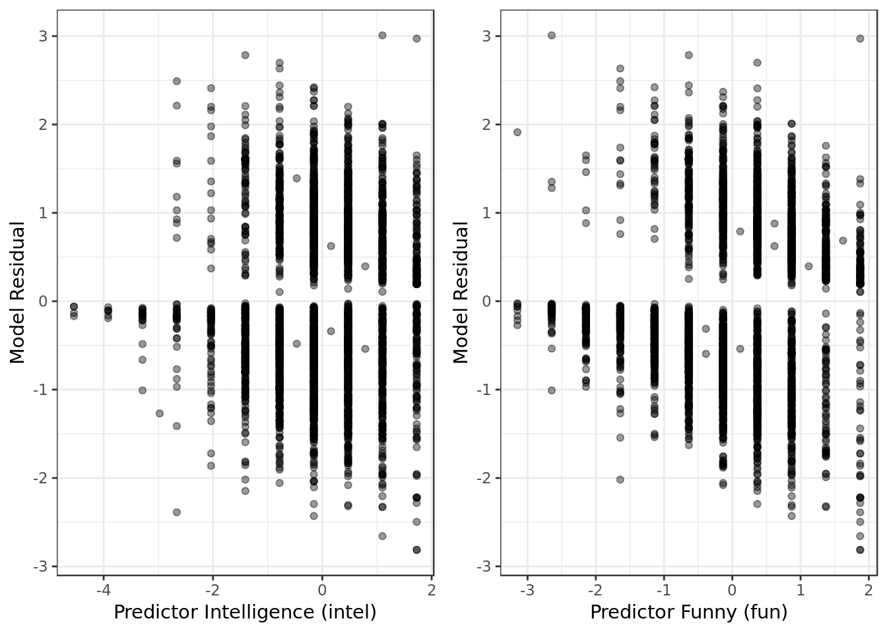
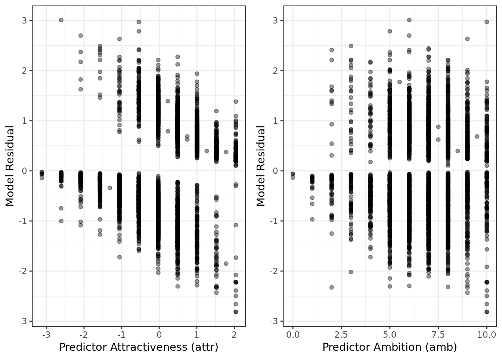
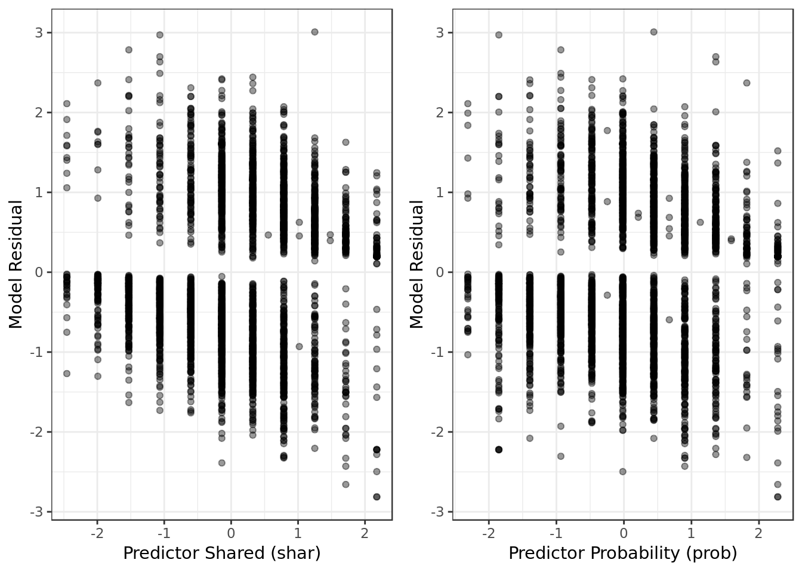
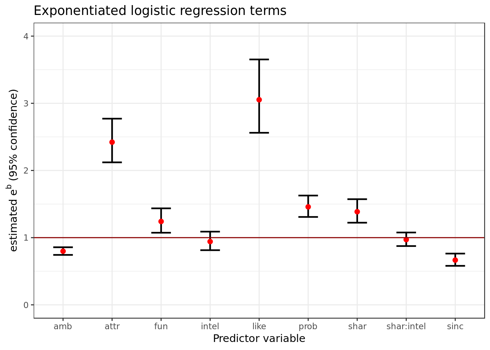
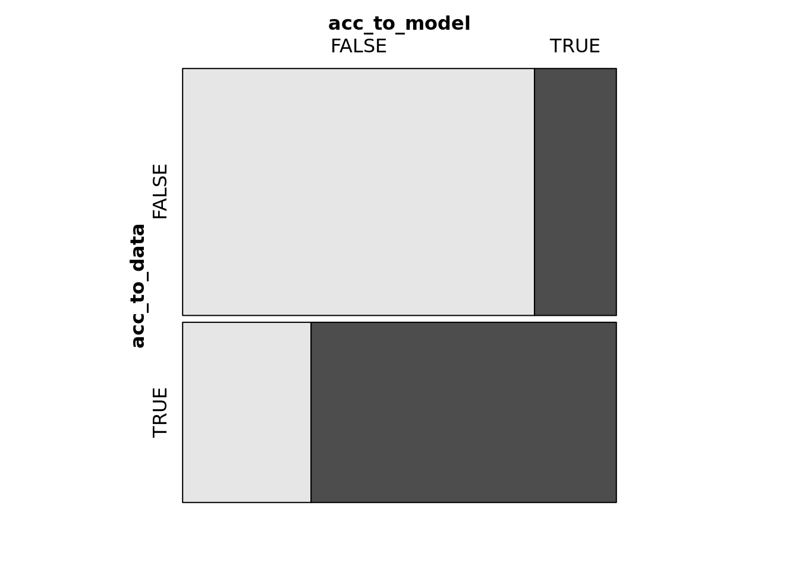

Multivariate logistic regression on speed dating data
This report contains regression models created based on data describing 5000 speed dates of 4 minutes of duration involving 310 american young adults. The original data were collected by Columbia Business professors. Further information and the data itself can be found in this report repository.
Data Overview
The variables
The response variable is the variable that you are interested in reaching conclusions about.
A predictor variable is a variable used in regression to predict another variable.
Our response variable will be "dec", we want to study how well the predictor variables can help predict its behavior and how they impact it.Each speed date had two participants, p1 (participant 1) and p2 (participant 2). For each speed date we the following variable were collected:
- iid : id of the participant p1 in the date
- gender : gender of p1, 0 = woman
- order : of the several dates in the night, this was the nth, according to this variable
- pid : id of participant p2
- int_corr : correlation between the interests of p1 and p2
- samerace : Are p1 and p2 of the same race?
- age_o : Age of p2
- age : Age of p1
- field : field of study of p1
- race : race of p1. The code is Black/African American=1; European/Caucasian-American=2; Latino/Hispanic American=3; Asian/Pacific Islander/Asian-American=4; Native American=5; Other=6
- from : from where p1 comes from
- career : what career p1 wants to follow sports, tvsports, exercise, dining, museums, art, hiking, gaming, clubbing, reading, tv, theater, movies, concerts, music, shopping, yoga : From 1 to 10, how interested p1 is in each one of these activities$
- attr : how attractive p1 thinks p2 is
- sinc : how sincere p1 thinks p2 is
- intel : how smart p1 thinks p2 is
- fun : how fun p1 thinks p2 is
- amb : how ambitious p1 thinks p2 is
- shar : how much p1 believes they both (p1 and p2) share the same interests and hobbies
- like : in general, how much does p1 likes p2?
- prob : how probable p1 thinks it’s that p2 will want to meet again with p- (scale 1-10)
- attr3_s : how attractive p1 believes itself
- sinc3_s : how sincere p1 believes itself
- intel3_s : how smart p1 believes itself
- fun3_s : how fun p1 believes itself
- amb3_s : how ambitious p1 believes itself
- dec : whether p1 wants to meet p2 again given how the speed date went.
data <- read_csv(here::here("evidences/speed-dating2.csv"),
col_types = cols(
.default = col_integer(),
int_corr = col_double(),
field = col_character(),
from = col_character(),
career = col_character(),
attr = col_double(),
sinc = col_double(),
intel = col_double(),
fun = col_double(),
amb = col_double(),
shar = col_double(),
like = col_double(),
prob = col_double(),
match_es = col_double(),
attr3_s = col_double(),
sinc3_s = col_double(),
intel3_s = col_double(),
fun3_s = col_double(),
amb3_s = col_double(),
dec = col_character()
)) %>%
mutate(dec = factor(dec),
gender = factor(gender),
samerace = factor(samerace),
race = factor(race))
data %>%
glimpse()## Observations: 4,918
## Variables: 44
## $ iid <int> 1, 1, 1, 1, 1, 1, 1, 1, 1, 1, 2, 2, 2, 2, 2, 2, 2, 2, 2…
## $ gender <fct> 0, 0, 0, 0, 0, 0, 0, 0, 0, 0, 0, 0, 0, 0, 0, 0, 0, 0, 0…
## $ order <int> 4, 3, 10, 5, 7, 6, 1, 2, 8, 9, 10, 9, 6, 1, 3, 2, 7, 8,…
## $ pid <int> 11, 12, 13, 14, 15, 16, 17, 18, 19, 20, 11, 12, 13, 14,…
## $ int_corr <dbl> 0.14, 0.54, 0.16, 0.61, 0.21, 0.25, 0.34, 0.50, 0.28, -…
## $ samerace <fct> 0, 0, 1, 0, 0, 0, 0, 0, 0, 0, 1, 1, 0, 1, 0, 1, 1, 1, 1…
## $ age_o <int> 27, 22, 22, 23, 24, 25, 30, 27, 28, 24, 27, 22, 22, 23,…
## $ age <int> 21, 21, 21, 21, 21, 21, 21, 21, 21, 21, 24, 24, 24, 24,…
## $ field <chr> "Law", "Law", "Law", "Law", "Law", "Law", "Law", "Law",…
## $ race <fct> 4, 4, 4, 4, 4, 4, 4, 4, 4, 4, 2, 2, 2, 2, 2, 2, 2, 2, 2…
## $ from <chr> "Chicago", "Chicago", "Chicago", "Chicago", "Chicago", …
## $ career <chr> "lawyer", "lawyer", "lawyer", "lawyer", "lawyer", "lawy…
## $ sports <int> 9, 9, 9, 9, 9, 9, 9, 9, 9, 9, 3, 3, 3, 3, 3, 3, 3, 3, 3…
## $ tvsports <int> 2, 2, 2, 2, 2, 2, 2, 2, 2, 2, 2, 2, 2, 2, 2, 2, 2, 2, 2…
## $ exercise <int> 8, 8, 8, 8, 8, 8, 8, 8, 8, 8, 7, 7, 7, 7, 7, 7, 7, 7, 7…
## $ dining <int> 9, 9, 9, 9, 9, 9, 9, 9, 9, 9, 10, 10, 10, 10, 10, 10, 1…
## $ museums <int> 1, 1, 1, 1, 1, 1, 1, 1, 1, 1, 8, 8, 8, 8, 8, 8, 8, 8, 8…
## $ art <int> 1, 1, 1, 1, 1, 1, 1, 1, 1, 1, 6, 6, 6, 6, 6, 6, 6, 6, 6…
## $ hiking <int> 5, 5, 5, 5, 5, 5, 5, 5, 5, 5, 3, 3, 3, 3, 3, 3, 3, 3, 3…
## $ gaming <int> 1, 1, 1, 1, 1, 1, 1, 1, 1, 1, 5, 5, 5, 5, 5, 5, 5, 5, 5…
## $ clubbing <int> 5, 5, 5, 5, 5, 5, 5, 5, 5, 5, 8, 8, 8, 8, 8, 8, 8, 8, 8…
## $ reading <int> 6, 6, 6, 6, 6, 6, 6, 6, 6, 6, 10, 10, 10, 10, 10, 10, 1…
## $ tv <int> 9, 9, 9, 9, 9, 9, 9, 9, 9, 9, 1, 1, 1, 1, 1, 1, 1, 1, 1…
## $ theater <int> 1, 1, 1, 1, 1, 1, 1, 1, 1, 1, 9, 9, 9, 9, 9, 9, 9, 9, 9…
## $ movies <int> 10, 10, 10, 10, 10, 10, 10, 10, 10, 10, 8, 8, 8, 8, 8, …
## $ concerts <int> 10, 10, 10, 10, 10, 10, 10, 10, 10, 10, 7, 7, 7, 7, 7, …
## $ music <int> 9, 9, 9, 9, 9, 9, 9, 9, 9, 9, 8, 8, 8, 8, 8, 8, 8, 8, 8…
## $ shopping <int> 8, 8, 8, 8, 8, 8, 8, 8, 8, 8, 3, 3, 3, 3, 3, 3, 3, 3, 3…
## $ yoga <int> 1, 1, 1, 1, 1, 1, 1, 1, 1, 1, 1, 1, 1, 1, 1, 1, 1, 1, 1…
## $ attr <dbl> 6, 7, 5, 7, 5, 4, 7, 4, 7, 5, 5, 8, 5, 7, 6, 8, 7, 5, 7…
## $ sinc <dbl> 9, 8, 8, 6, 6, 9, 6, 9, 6, 6, 7, 5, 8, 9, 8, 7, 5, 8, 6…
## $ intel <dbl> 7, 7, 9, 8, 7, 7, 7, 7, 8, 6, 8, 6, 9, 7, 7, 8, 9, 7, 8…
## $ fun <dbl> 7, 8, 8, 7, 7, 4, 4, 6, 9, 8, 4, 6, 6, 6, 9, 3, 6, 5, 9…
## $ amb <dbl> 6, 5, 5, 6, 6, 6, 6, 5, 8, 10, 6, 9, 3, 5, 7, 6, 7, 9, …
## $ shar <dbl> 5, 6, 7, 8, 6, 4, 7, 6, 8, 8, 3, 6, 4, 7, 8, 2, 9, 5, 5…
## $ like <dbl> 7, 7, 7, 7, 6, 6, 6, 6, 7, 6, 6, 7, 6, 7, 8, 6, 8, 5, 5…
## $ prob <dbl> 6, 5, NA, 6, 6, 5, 5, 7, 7, 6, 4, 3, 7, 8, 6, 5, 7, 6, …
## $ match_es <dbl> 4, 4, 4, 4, 4, 4, 4, 4, 4, 4, 3, 3, 3, 3, 3, 3, 3, 3, 3…
## $ attr3_s <dbl> NA, NA, NA, NA, NA, NA, NA, NA, NA, NA, NA, NA, NA, NA,…
## $ sinc3_s <dbl> NA, NA, NA, NA, NA, NA, NA, NA, NA, NA, NA, NA, NA, NA,…
## $ intel3_s <dbl> NA, NA, NA, NA, NA, NA, NA, NA, NA, NA, NA, NA, NA, NA,…
## $ fun3_s <dbl> NA, NA, NA, NA, NA, NA, NA, NA, NA, NA, NA, NA, NA, NA,…
## $ amb3_s <dbl> NA, NA, NA, NA, NA, NA, NA, NA, NA, NA, NA, NA, NA, NA,…
## $ dec <fct> yes, yes, yes, yes, yes, no, yes, no, yes, yes, no, no,…Data exploration
data %>%
na.omit(race) %>%
ggplot(aes(race,y=(..count..)/sum(..count..))) +
geom_bar(color = "black",
fill = "grey") +
labs(x= "Participant Race",
y = "Relative Frequency")
- Most of the participants are white (code = 2)
- There were no Native Americans involved (code = 5)
data %>%
na.omit(intel) %>%
ggplot(aes(intel, ..ndensity..)) +
geom_histogram(color = "black",
fill = "grey",
breaks=seq(0, 10, by = 1)) +
scale_x_continuous(breaks=seq(0, 10, by = 1)) +
labs(x= "Intelligence (intel)",
y = "Relative Density")- Most of the time P1 gave P2 a score around 7 and 8 for intelligence.
data %>%
na.omit(attr) %>%
ggplot(aes(attr, ..ndensity..)) +
geom_histogram(color = "black",
fill = "grey",
breaks=seq(0, 10, by = 1)) +
scale_x_continuous(breaks=seq(0, 10, by = 1)) +
labs(x= "Attractivnes (attr)",
y = "Relative Density")- Most of the time P1 gave P2 a score around 5 and 6 for attractiveness.
data %>%
na.omit(amb) %>%
ggplot(aes(amb, ..ndensity..)) +
geom_histogram(color = "black",
fill = "grey",
breaks=seq(0, 10, by = 1)) +
scale_x_continuous(breaks=seq(0, 10, by = 1)) +
labs(x= "Ambition (amb)",
y = "Relative Density")- Most of the time P1 gave P2 a score around 6 and 7 for ambition.
data %>%
na.omit(sinc) %>%
ggplot(aes(sinc, ..ndensity..)) +
geom_histogram(color = "black",
fill = "grey",
breaks=seq(0, 10, by = 1)) +
scale_x_continuous(breaks=seq(0, 10, by = 1)) +
labs(x= "Sincerity (sinc)",
y = "Relative Density")- Most of the time P1 gave P2 a score around 6 and 8 for sincerity.
data %>%
na.omit(like) %>%
ggplot(aes(like, ..ndensity..)) +
geom_histogram(color = "black",
fill = "grey",
breaks=seq(0, 10, by = 1)) +
scale_x_continuous(breaks=seq(0, 10, by = 1)) +
labs(x= "Like (like)",
y = "Relative Density")
- Most of the time P1 gave P2 a score around 5 and 6 for like.
Splitting Data for Cross Validation
data %>% # Keep only candidate predictor variables and response variable
select(dec,fun, prob, order, amb,
attr, sinc, prob, shar,
intel, like, gender, samerace) %>%
na.omit() %>% # remove NAs
mutate_at(
.vars = vars(fun, prob, order,attr, ## Put numeric predictor variables on same scale
sinc, like, prob, shar,intel),
.funs = funs(as.numeric(scale(.)))) -> data_scaled## Warning: funs() is soft deprecated as of dplyr 0.8.0
## please use list() instead
##
## # Before:
## funs(name = f(.)
##
## # After:
## list(name = ~f(.))
## This warning is displayed once per session.data_scaled %>%
glimpse()## Observations: 4,101
## Variables: 12
## $ dec <fct> yes, yes, yes, yes, no, yes, no, yes, yes, no, no, no, …
## $ fun <dbl> 0.3673163, 0.8696052, 0.3673163, 0.3673163, -1.1395502,…
## $ prob <dbl> 0.44246160, -0.01644963, 0.44246160, 0.44246160, -0.016…
## $ order <dbl> -0.90758631, -1.08582650, -0.72934613, -0.37286577, -0.…
## $ amb <dbl> 6, 5, 6, 6, 6, 6, 5, 8, 10, 6, 9, 3, 5, 7, 6, 7, 9, 4, …
## $ attr <dbl> -0.0256121, 0.4905314, 0.4905314, -0.5417556, -1.057899…
## $ sinc <dbl> 1.09093408, 0.53812046, -0.56750679, -0.56750679, 1.090…
## $ shar <dbl> -0.1395212, 0.3235922, 1.2498190, 0.3235922, -0.6026347…
## $ intel <dbl> -0.1541995, -0.1541995, 0.4728427, -0.1541995, -0.15419…
## $ like <dbl> 0.52052548, 0.52052548, 0.52052548, -0.01812579, -0.018…
## $ gender <fct> 0, 0, 0, 0, 0, 0, 0, 0, 0, 0, 0, 0, 0, 0, 0, 0, 0, 0, 0…
## $ samerace <fct> 0, 0, 0, 0, 0, 0, 0, 0, 0, 1, 1, 0, 1, 0, 1, 1, 1, 1, 1…- Selecting promising predictors, filtering invalid numbers and putting the variables on appropriate scale
For the sake of simplicity we’ll follow the (80/20) thumb rule (based on Pareto’s principle) and put 80% of our dataset in the training set and 20% in the test set.
set.seed(101) # We set the set for reason of reproducibility
## Adding surrogate key to dataframe
data_scaled$id <- 1:nrow(data_scaled)
data_scaled %>%
dplyr::sample_frac(.8) -> training_data
training_data %>%
glimpse()## Observations: 3,281
## Variables: 13
## $ dec <fct> yes, no, no, yes, no, no, yes, no, yes, yes, yes, no, n…
## $ fun <dbl> 0.3673163, 0.3673163, -0.1349725, 0.8696052, -0.6372614…
## $ prob <dbl> 0.90137283, 2.27810651, -0.01644963, 0.90137283, 0.9013…
## $ order <dbl> 0.16185478, -0.55110595, -0.90758631, 0.87481550, -0.19…
## $ amb <dbl> 8, 10, 6, 7, 4, 7, 6, 2, 9, 6, 6, 8, 7, 6, 8, 6, 8, 9, …
## $ attr <dbl> 1.5228184, -1.5740426, -0.0256121, 0.4905314, -2.090186…
## $ sinc <dbl> 0.53812046, 1.64374770, -0.01469317, 0.53812046, -2.225…
## $ shar <dbl> 1.2498190, -0.1395212, -0.1395212, 1.2498190, -1.528861…
## $ intel <dbl> 1.0998849, -0.1541995, -0.7812416, 0.4728427, -2.035326…
## $ like <dbl> 1.05917675, -1.09542833, -0.01812579, 1.05917675, -2.71…
## $ gender <fct> 1, 1, 1, 1, 0, 1, 1, 1, 0, 1, 0, 1, 1, 1, 0, 1, 0, 0, 0…
## $ samerace <fct> 0, 1, 0, 1, 1, 1, 0, 0, 1, 1, 0, 1, 0, 0, 0, 0, 1, 1, 0…
## $ id <int> 1527, 180, 2909, 2696, 1024, 1230, 2396, 1366, 2546, 22…- Randomly selecting the training data
dplyr::anti_join(data_scaled,
training_data,
by = 'id') -> testing_data
testing_data %>%
glimpse()## Observations: 820
## Variables: 13
## $ dec <fct> no, yes, no, no, no, yes, no, no, no, no, yes, no, no, …
## $ fun <dbl> -0.1349725, -0.1349725, -1.6418391, 0.3673163, 0.869605…
## $ prob <dbl> 0.90137283, 1.36028406, -0.01644963, 0.90137283, -1.852…
## $ order <dbl> -0.55110595, -1.44230686, -1.26406668, -1.44230686, -0.…
## $ amb <dbl> 3, 5, 6, 9, 6, 7, 8, 5, 4, 3, 2, 8, 7, 7, 6, 6, 1, 10, …
## $ attr <dbl> -0.5417556, 0.4905314, 1.0066749, 1.0066749, -1.0578991…
## $ sinc <dbl> 0.53812046, 1.09093408, -0.01469317, -0.01469317, -0.01…
## $ shar <dbl> -0.6026347, 0.7867056, -1.5288615, 0.7867056, 0.7867056…
## $ intel <dbl> 1.0998849, -0.1541995, 0.4728427, 1.0998849, 0.4728427,…
## $ like <dbl> -0.01812579, 0.52052548, -0.01812579, 1.05917675, -1.09…
## $ gender <fct> 0, 0, 0, 0, 0, 0, 0, 0, 0, 0, 0, 0, 1, 1, 1, 1, 1, 1, 1…
## $ samerace <fct> 0, 1, 1, 1, 0, 1, 0, 1, 0, 1, 0, 0, 0, 0, 1, 1, 1, 0, 0…
## $ id <int> 12, 13, 15, 27, 30, 31, 32, 39, 42, 50, 51, 62, 96, 98,…- The rest of the data will be the testing data (Disjoint sets)
Explanation on logistic regression
If you already know your way around logistic regression feel free to skip this section. If you ever feel unsure about it feel free to come back here and consult it.
Formulas and definitions
Let’s use as example our aforementioned response variable \(dec\), and let’s suppose we’ll use as our sole predictor \(like\). In the end it all boils down to a conditional probability for a certain value of \(dec\) and \(like\):
\[\large P(y \ | \ x ) = z, \normalsize where: \ y = dec;\ x=like;\]
As you may have noticed \(dec\) is a binary variable (p1 either says yes or no), for this reason we work with a sigmoid function for the probability of a certain outcome of \(dec\):
\[\large P(y\ | \ x)=\frac{e^{b_{0}+b_{1} \cdot x}}{1 + e^{b_{0}+b_{1} \cdot x}}, \; \normalsize where: \ y = dec;\ x=like;\]
However, to talk about how the predictor \(like\) impacts the response variable \(dec\), which means talking about \(b_{1}\) it’s more convenient to talk in terms of odds ratio:
\[\large \frac{P(y\ | \ x)}{1 - P(y \ | \ x)} =e^{b_{0}+b_{1} \cdot x_{1}}, \; \normalsize where: \ y = dec;\ x_{1}=like;\]
The libraries usually render the coefficients in the following form:
\[\large log(\frac{P(y\ | \ x)}{1 - P(y\ | \ x)}) =b_{0}+b_{1} \cdot x_{1}, \; \normalsize where: \ y = dec;\ x_{1}=like;\]
Numeric example
In my experience an example with actual numbers helps a lot, so let’s assume these are the following values for our variables (by means of the logistic regression):
\(b1 = 0.9441278, \\ b0 = -6.2119061, \\ y = 1 \ (p1 \ wants \ to \ see \ p2 \ again ).\)
Our variable’s values would render the following formula in terms of standard library output:
\[\large log(\frac{P(y = 1\ | \ x)}{1 - P(y = 1\ | \ x)}) =-6.2119061+0.9441278 \cdot x_{1}, \; \normalsize where: \ y = dec;\ x_{1}=like;\]
Knowing that \(e^{-6.2119061} \sim 0.002005411\) the more meaningful formula with the actual exponentiation would look like:
\[\large \frac{P(y=1 \ | \ x)}{1 - P(y=1 \ | \ x)} =0.002005411 \cdot e^{b_{1} \cdot x}, \; \normalsize where: \ y = dec;\ x=like;\]
Which depending on \(x\) will look like:
\(\large \frac{P(y=1 \ | \ x)}{1 - P(y=1 \ | \ x)} =0.002005411, \; \normalsize if: \ x=0;\)
\(\large \frac{P(y=1 \ | \ x)}{1 - P(y=1 \ | \ x)} =0.002005411 \cdot e^{b_{1}}, \; \normalsize where: \ x=1;\)
\(\large \frac{P(y=1 \ | \ x)}{1 - P(y=1 \ | \ x)} =0.002005411 \cdot e^{2 \cdot b_{1}}, \; \normalsize where: \ x=2;\)
And so forth…
Notice that at the end how the formula changes depends mostly on the term \(\large e^{b_{1} \cdot x}\). If we have the exponentiation \(A^{B}\) we have three possibilities:
\(B > 0 \ \) : Then \(A^{B} > 1\) and \(A^{B}\) will be bigger the bigger \(B\) is.
\(B = 0 \ \) : Then \(A^{B} = 1\)
\(B < 0 \ \): Then \(A^{B}\) boils down to \(\frac{1}{A^{B}}\) which will be a smaller fraction the bigger \(B\) is.
Mind now that our \(b1 > 0\) or in other words \(e^{b1} > 1\), therefore it will have a positive effect on \(\frac{P(y=1 \ | \ x)}{1 - P(y=1 \ | \ x)}\), and the bigger it’s the stronger the positive effect. Therefore \(like\) has a positive effect on the oddratio of \(dec = 1\) over \(dec = 0\).
Analysis Questions
Which factors (predictors) have a significant effect on the chance of p1 deciding to meet with p2 again? Are their effect positive or negative?
Which factor (predictor) has the most effect (relevance) on the chance of p1 deciding to meet with p2 again?
Logistic Regression
glm(dec ~ like + fun + attr + shar + sinc + prob + amb + intel + intel * shar,
data = training_data,
family = "binomial") -> bm
glance(bm)## # A tibble: 1 x 7
## null.deviance df.null logLik AIC BIC deviance df.residual
## <dbl> <int> <dbl> <dbl> <dbl> <dbl> <int>
## 1 4468. 3280 -1514. 3049. 3110. 3029. 3271Residual Analysis
Residual Analysis can be very hard to use to help you understand what is going on with your logistic regression model. So we should take what they say with a grain of salt and probably give more weight to what \(McFadden's \ pseudo \ R2\) said.
Let’s keep the residual data in a specific data frame
mod.res <- resid(bm)
std.resid <- rstandard(bm)
dec <- training_data$dec
resid_data <- data.frame(mod.res,std.resid,training_data,
stringsAsFactors=FALSE)
resid_data %>%
sample_n(10)## mod.res std.resid dec fun prob order amb
## 1 1.0811017 1.0821094 yes -0.6372614 0.4424616 -0.01638541 6
## 2 -0.6311717 -0.6338376 no -0.1349725 1.3602841 1.58777623 10
## 3 0.8239655 0.8249330 yes 0.8696052 0.4424616 1.40953605 6
## 4 -1.1644742 -1.1676620 no -0.6372614 1.3602841 2.12249678 8
## 5 -1.1156755 -1.1175782 no -0.1349725 1.3602841 1.76601641 5
## 6 1.0827327 1.0843812 yes -0.1349725 0.4424616 0.87481550 7
## 7 -0.6816411 -0.6836557 no -1.1395502 -0.9342721 1.05305569 3
## 8 -0.3565621 -0.3569524 no -2.1441279 -0.9342721 1.23129587 3
## 9 -0.2253665 -0.2255826 no -1.1395502 -1.8520946 0.34009496 8
## 10 -1.5431694 -1.5490716 no -1.6418391 0.4424616 -0.55110595 6
## attr sinc shar intel like gender
## 1 0.4905314 -0.56750679 -0.1395212 -0.7812416 -0.01812579 0
## 2 -1.0578991 1.64374770 1.7129324 1.7269270 0.52052548 0
## 3 1.0066749 -0.01469317 0.3235922 -0.1541995 -0.01812579 1
## 4 -0.0256121 -1.12032042 0.3235922 0.4728427 -0.01812579 0
## 5 -0.0256121 -0.56750679 -0.1395212 -0.7812416 -0.55677706 1
## 6 -0.5417556 -0.56750679 1.2498190 -0.1541995 0.52052548 1
## 7 -1.0578991 -1.12032042 -1.5288615 -1.4082838 -0.01812579 1
## 8 -1.0578991 -2.22594767 -1.0657481 -2.0353260 -1.63407961 0
## 9 0.4905314 -1.12032042 -1.0657481 -2.0353260 -2.17273088 1
## 10 1.5228184 -1.12032042 -1.0657481 -0.7812416 -0.01812579 1
## samerace id
## 1 1 996
## 2 0 1040
## 3 0 3749
## 4 1 3459
## 5 1 3819
## 6 0 3906
## 7 0 3867
## 8 1 419
## 9 0 452
## 10 1 552Against each predictor
resid_data %>%
ggplot(aes(intel,mod.res)) +
geom_point(alpha=0.4) +
labs(x = "Predictor Intelligence (intel)",
y = "Model Residual") -> intel_resid
resid_data %>%
ggplot(aes(fun,mod.res)) +
geom_point(alpha=0.4) +
labs(x = "Predictor Funny (fun)",
y = "Model Residual") -> fun_resid
gridExtra::grid.arrange(intel_resid,
fun_resid,
ncol = 2)
- No alarming results in terms of extreme values, obviously non-linear patterns nor heteroscedasticity.
resid_data %>%
ggplot(aes(attr,mod.res)) +
geom_point(alpha=0.4) +
labs(x = "Predictor Attractiveness (attr)",
y = "Model Residual") -> attr_resid
resid_data %>%
ggplot(aes(amb,mod.res)) +
geom_point(alpha=0.4) +
labs(x = "Predictor Ambition (amb)",
y = "Model Residual") -> amb_resid
gridExtra::grid.arrange(attr_resid,
amb_resid,
ncol = 2)
- No alarming results in terms of extreme values, obviously non-linear patterns nor heteroscedasticity.
resid_data %>%
ggplot(aes(sinc,mod.res)) +
geom_point(alpha=0.4) +
labs(x = "Predictor Sincerity (sinc)",
y = "Model Residual") -> sinc_resid
resid_data %>%
ggplot(aes(like,mod.res)) +
geom_point(alpha=0.4) +
labs(x = "Predictor Like (like)",
y = "Model Residual") -> like_resid
gridExtra::grid.arrange(sinc_resid,
like_resid,
ncol=2)- No alarming results in terms of extreme values, obviously non-linear patterns nor heteroscedasticity.
resid_data %>%
ggplot(aes(shar,mod.res)) +
geom_point(alpha=0.4) +
labs(x = "Predictor Shared (shar)",
y = "Model Residual") -> shar_resid
resid_data %>%
ggplot(aes(prob,mod.res)) +
geom_point(alpha=0.4) +
labs(x = "Predictor Probability (prob)",
y = "Model Residual") -> prob_resid
gridExtra::grid.arrange(shar_resid,
prob_resid,
ncol=2)
- No alarming results in terms of extreme values, obviously non-linear patterns nor heteroscedasticity.
Looking at each predictor against the model residual we can say:
- They’re not symmetrically distributed, nor they tend to cluster towards the middle of the plot.
- They’re relatively clustered around the lower single digits of the y-axis (e.g., ideally would be 0.5 or 1.5), while not ideal it could be worse.
Against whole model
bm %>%
ggplot(aes(.fitted, .resid)) +
geom_point() +
stat_smooth(method="loess") +
geom_hline(yintercept=0, col="red", linetype="dashed") +
xlab("Fitted values") + ylab("Residuals") +
ggtitle("Residual vs Fitted Plot")
- There’s no distinctive pattern in the plot, therefore this suggests that there weren’t non-linear patterns in the data that couldn’t be explained by the model and were left out in the residuals.
The data doesn’t seem to demand a non-linear regression.
y <- quantile(resid_data$std.resid[!is.na(resid_data$std.resid)], c(0.25, 0.75))
x <- qnorm(c(0.25, 0.75))
slope <- diff(y)/diff(x)
int <- y[1L] - slope * x[1L]
resid_data %>%
ggplot(aes(sample=std.resid)) +
stat_qq(shape=1, size=3) + # open circles
labs(title="Normal Q-Q", # plot title
x="Theoretical Quantiles", # x-axis label
y="Standardized Residuals") + # y-axis label
geom_abline(slope = slope,
color = "red",
size = 0.8,
intercept = int,
linetype="dashed") # dashed reference line- There’s some deviation from the normal distribution on both left and right side of the qq plot, but otherwise the standardized residuals are not that far way from the normal distribution. For a logistic regression our qqplot is very well behaved.
- The Normal Q-Q plot helps you detect if your residuals are normally distributed. But the deviance residuals don’t have to be normally distributed for the model to be valid, so the normality / non-normality of the residuals doesn’t necessarily tell you anything.
This suggests that there would be a better combination of predictors to be found, although the current one still seems considerably appropriate.
bm %>%
ggplot(aes(.fitted,
sqrt(abs(.stdresid)))) +
geom_point(na.rm=TRUE) +
stat_smooth(method="loess",
na.rm = TRUE) +
labs(title = "Scale-Location",
x= "Fitted Value",
y = expression(sqrt("|Standardized residuals|")))- The residuals appear to be somewhat randomly spread, however there’s a tendency in them to form a parabola.
- There’s some degree of violation on the assumption of equal variance (homoscedasticity).
Confirmation of the qqplot results.
bm %>%
ggplot(aes(.hat, .stdresid)) +
geom_point(aes(size=.cooksd), na.rm=TRUE) +
stat_smooth(method="loess", na.rm=TRUE) +
xlab("Leverage")+ylab("Standardized Residuals") +
ggtitle("Residual vs Leverage Plot") +
scale_size_continuous("Cook's Distance", range=c(1,5)) +
theme(legend.position="bottom")- All the occurrences have low values of Cook’s Distance (below 0.1).
There are no “outliers”/extreme values who are influential cases (i.e., subjects) and would therefore have an undue influence on the regression line.
Overall our residua analysis suggests that our regression fit the data very well.
There may be a better model out there but ours does a pretty good job. Model Coefficients
tidy(bm, conf.int = TRUE)## # A tibble: 10 x 7
## term estimate std.error statistic p.value conf.low conf.high
## <chr> <dbl> <dbl> <dbl> <dbl> <dbl> <dbl>
## 1 (Intercept) 0.910 0.243 3.75 1.76e- 4 0.436 1.39
## 2 like 1.12 0.0905 12.3 6.54e-35 0.940 1.30
## 3 fun 0.216 0.0743 2.91 3.65e- 3 0.0706 0.362
## 4 attr 0.884 0.0682 13.0 1.91e-38 0.752 1.02
## 5 shar 0.326 0.0642 5.08 3.71e- 7 0.201 0.453
## 6 sinc -0.407 0.0698 -5.83 5.51e- 9 -0.544 -0.271
## 7 prob 0.377 0.0556 6.78 1.18e-11 0.269 0.487
## 8 amb -0.225 0.0364 -6.19 6.01e-10 -0.297 -0.154
## 9 intel -0.0601 0.0745 -0.806 4.20e- 1 -0.206 0.0857
## 10 shar:intel -0.0292 0.0528 -0.553 5.80e- 1 -0.134 0.0736broom::tidy(bm,
conf.int = TRUE,
conf.level = 0.95) %>%
filter(term != "(Intercept)") %>%
ggplot(aes(term, estimate,
ymin = conf.low,
ymax = conf.high)) +
geom_errorbar(size = 0.8, width= 0.4) +
geom_point(color = "red", size = 2) +
geom_hline(yintercept = 0, colour = "darkred") +
labs(x = "Predictor variable",
title = "Logistic regression terms",
y = expression(paste("estimated ", 'b'," (95% confidence)")))The coefficients here follow a generalization of the formula \[\normalsize log(\frac{P(y\ | \ x)}{1 - P(y\ | \ x)}) =b_{0}+b_{1} \cdot x_{1} \;\]
This particular alternative doesn’t give a clear idea on the magnitude of the coefficients’ effect. There are however some things that can be extracted:
- intel and shar * intel have no significant effect as (their C.I) regarding \(b\) intersect 0.
- amb, attr, fun, like, prob, shar and sinc have significant effect as (their C.I) don’t intersect 1.
- amb and sinc have a negative effect on the on the response variable.
- attr, fun, like ,prob and shar have a positive effect on the response variable.
- like and attr seem to have the highest effect on the response variable, farthest from 0.
- Despite intersection with attr, like seems to have the biggest impact on the response variable.
# EXPONENTIATING:
tidy(bm, conf.int = TRUE, exponentiate = TRUE)## # A tibble: 10 x 7
## term estimate std.error statistic p.value conf.low conf.high
## <chr> <dbl> <dbl> <dbl> <dbl> <dbl> <dbl>
## 1 (Intercept) 2.48 0.243 3.75 1.76e- 4 1.55 4.00
## 2 like 3.05 0.0905 12.3 6.54e-35 2.56 3.65
## 3 fun 1.24 0.0743 2.91 3.65e- 3 1.07 1.44
## 4 attr 2.42 0.0682 13.0 1.91e-38 2.12 2.77
## 5 shar 1.39 0.0642 5.08 3.71e- 7 1.22 1.57
## 6 sinc 0.666 0.0698 -5.83 5.51e- 9 0.580 0.763
## 7 prob 1.46 0.0556 6.78 1.18e-11 1.31 1.63
## 8 amb 0.798 0.0364 -6.19 6.01e-10 0.743 0.857
## 9 intel 0.942 0.0745 -0.806 4.20e- 1 0.813 1.09
## 10 shar:intel 0.971 0.0528 -0.553 5.80e- 1 0.875 1.08broom::tidy(bm,
conf.int = TRUE,
conf.level = 0.95,
exponentiate = TRUE) %>%
filter(term != "(Intercept)") %>%
ggplot(aes(term, estimate,
ymin = conf.low,
ymax = conf.high)) +
geom_errorbar(size = 0.8, width= 0.4) +
geom_point(color = "red", size = 2) +
geom_hline(yintercept = 1, colour = "darkred") +
labs(x = "Predictor variable",
title = "Exponentiated logistic regression terms",
y = expression(paste("estimated ", 'e'^{'b'}," (95% confidence)"))) +
ylim(0,4)
The coefficients here follow a generalization of the formula \[\normalsize \frac{P(y\ | \ x)}{1 - P(y \ | \ x)} =e^{b_{0}+b_{1} \cdot x_{1}} \;\]
As mentioned in the previous section when \(e^{b} > 1\) its effect is positive and when \(e^{b} < 1\) it has a negative effect. Therefore:
intel and shar * intel have no significant effect as (their C.I) intersect 1.
- amb, attr, fun, like, prob, shar and sinc have significant effect as (their C.I) don’t intersect 1.
- amb and sinc have a negative effect on the oodratio of \(dec = 1\) over \(dec = 0\).
- attr, fun, like ,prob and shar have a positive effect on the oodratio of \(dec = 1\) over \(dec = 0\).
A multiplier of negative effect is strongest the farther it’s from 1 and the closer it’s to 0 while A multiplier of positive effect is strongest the farther it’s from 1 and the closer it’s to \(+\infty\).
The predictor like is the most relevant of the candidates i.e. it’s the one has that the most effect on the chance of p1 deciding to meet with p2 again.
- The predictor like’s estimate range is the farthest from 1. To have an idea C.I for like is around 3 so it’s basically tripling the oddratio when \(like = 1\).
- To have a multiplier of negative effect comparable to like its C.I. would need to be around \(\frac{1}{3}\), so it would cut by three the oddratio when its value is 1 the same way like triples it when \(like = 1\).
- As we can see in the plot the range of all other predictors in terms of C.I. are far too close to 1 to compare to like with the exception of attr.
- While attr intersects like the intersection is not big enough to completely dismiss any possibility of significant difference between them. For this reason we’ll still consider like as the most relevant with attr dangerously close as second.
Cross Validation
ROC Curve
# Compute AUC for predicting Class with the model
prob <- predict(bm, newdata=testing_data, type="response")
pred <- prediction(prob, testing_data$dec)
perf <- performance(pred, measure = "tpr", x.measure = "fpr")
autoplot(perf) +
labs(x="False Positive Rate",
y="True Positive Rate",
title="ROC Curve")auc <- performance(pred, measure = "auc")
auc <- auc@y.values[[1]]
auc## [1] 0.863979- AUC values above 0.80 indicate that the model does a good job.
- With a result of \(0.863979\) the computed AUC for the predicting Class shows that the model does a good job in discriminating between the two categories which comprise our target variable.
Classification Rate
predictions = bm %>%
augment(type.predict = "response") %>%
mutate(acc_to_model = .fitted > .5,
acc_to_data = dec == "yes")
table(predictions$acc_to_model, predictions$acc_to_data)##
## FALSE TRUE
## FALSE 1539 410
## TRUE 358 974xtabs(~ acc_to_model + acc_to_data, data = predictions)## acc_to_data
## acc_to_model FALSE TRUE
## FALSE 1539 410
## TRUE 358 974mosaic(acc_to_model ~ acc_to_data, data = predictions,
shade = T)
predictions %>%
summarise(accuracy = sum(acc_to_model == acc_to_data) / n(),
false_positives = n())## # A tibble: 1 x 2
## accuracy false_positives
## <dbl> <int>
## 1 0.766 3281- Our model rendered a pretty decent accuracy rate of \(0.765925\).
McFadden’s pseudo R2
pR2(bm)## llh llhNull G2 McFadden r2ML
## -1514.3062029 -2233.9458752 1439.2793446 0.3221384 0.3551070
## r2CU
## 0.4774310- \(Rho-squared\) also known as \(McFadden's \ pseudo \ R2\) can be interpreted like R2, but its values tend to be considerably lower than those of the R2 index. And values from 0.2-0.4 indicate (in McFadden’s words) excellent model fit. Our \(0.3221384\) therefore represents an excellent fit in terms of \(McFadden's \ pseudo \ R2\).
Conclusion
Significance
- amb, attr, fun, like, prob, shar and sinc have significant effect as (their C.I) don’t intersect 1 in terms of \(e^{b}\) nor 0 in terms of \(b\).
- amb and sinc have a negative effect on the oodratio of \(dec = 1\) over \(dec = 0\).
- attr, fun, like ,prob and shar have a positive effect on the oddratio of \(dec = 1\) over \(dec = 0\).
Most relevant predictor
- The predictor like is the most relevant of the candidates i.e. it’s the one has that the most effect on the chance of p1 deciding to meet with p2 again with attr close as second.
- Despite intersection we opted to choose like as winner for we judged their intersection was not big enough to dismiss the possibility of difference between them.